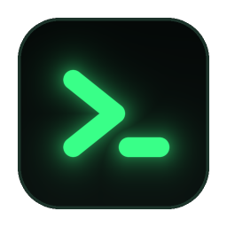
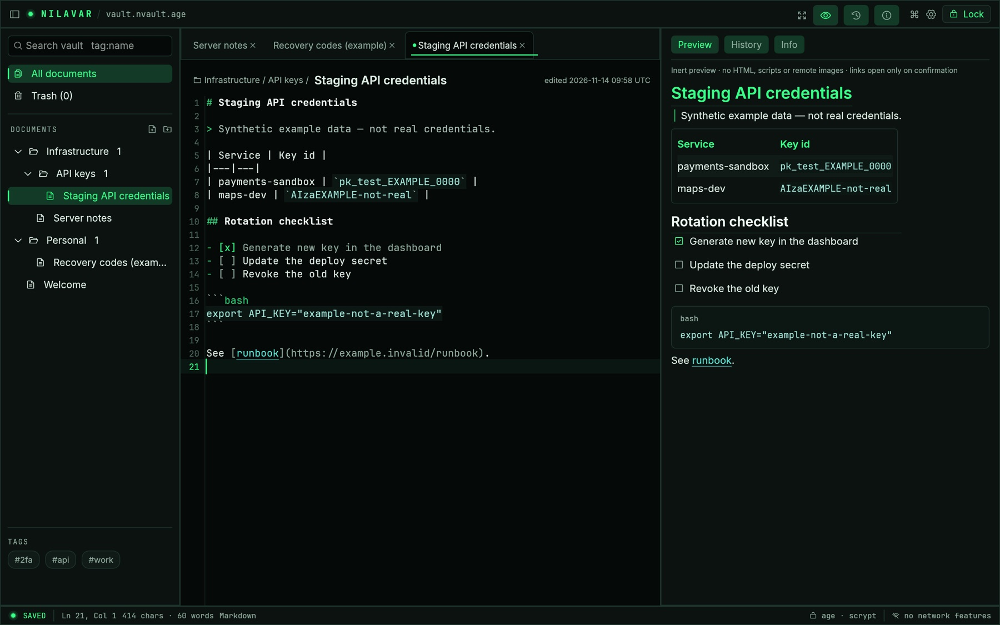

One file holds everything
Every note, title, folder, tag, version and deleted item lives inside a single encrypted .nvault.age file. Nothing readable is left on disk.

A private notebook for passwords, recovery codes, API keys and notes that never touches the internet. No accounts. No cloud. No servers to fail.
Free & open source (MIT) · all downloads & checksums · unaudited alpha — keep backups

// why nilavar
Every note, title, folder, tag, version and deleted item lives inside a single encrypted .nvault.age file. Nothing readable is left on disk.
No sync servers, telemetry, update checks or crash uploads — there's no networking code at all. On macOS it even tells the kernel to block every connection.
Copy the vault to a USB stick, Google Drive, Dropbox or an email to yourself. Open it on any computer with the same passphrase.
Standard age format: 256-bit keys, ChaCha20-Poly1305, and scrypt to make every guess slow and memory-hungry.
Encrypted version history with diffs and one-click restore, a trash, automatic encrypted recovery copies, backups and crash-safe saving.
Changed the same vault on two computers? Nilavar notices and keeps your version as a separate encrypted conflict copy.
On idle, on sleep, when your screen locks, or with one keystroke. Copied passwords are wiped from the clipboard after 30 seconds.
Tabs, folders, tags, vault-wide search, find & replace, command palette, Markdown with a safe live preview, checklists, focus mode.
// built to outlast
Most "secure" apps are a login page in front of someone else's server. When the company shuts down, gets breached or the internet goes dark, your data goes with it. Nilavar works the other way around.
age -d vault.nvault.age still recovers your notes if Nilavar ever disappears.// take the tour
Folders and tags on the left, a keyboard-first editor with line numbers and Markdown highlighting, and a safe live preview — no web view, no remote images, links only open after you confirm.
All screenshots show made-up example data, rendered from the real app.
// how it works
Because Nilavar is not a web app and never connects to the internet, there's no automatic sync between devices — and that's the point. You move the encrypted file yourself; it's safe to put anywhere.
Make a vault and choose a passphrase (or let Nilavar suggest seven random words).
Everything saves automatically — encrypted — into one .nvault.age file.
Copy the file by USB, Google Drive, Dropbox, AirDrop or email.
Install Nilavar on the other computer and open the file with the same passphrase.
Laptop Any other computer ┌──────────────────┐ USB · Drive · ┌──────────────────┐ │ vault.nvault.age │ ── Dropbox · ───▶ │ vault.nvault.age │ │ (encrypted) │ email │ same passphrase │ └──────────────────┘ └──────────────────┘
// security, in plain words
age v1 passphrase mode: scrypt key stretching (~0.3 s per unlock, by design) and ChaCha20-Poly1305 with 256-bit keys. Nilavar invents no cryptography.
Everything inside: titles, folders, tags, text, history, trash. Outsiders see only a file's name, size and dates.
Change a single bit and the vault refuses to open rather than show corrupted data.
No networking code at all. On macOS the operating system kernel blocks the app's network access entirely.
Self-wiping buffers, workspace wiped on lock, clipboard auto-clear, crash dumps disabled.
An unaudited alpha with 100+ automated tests, fuzzing and interop tests against the reference age tools. Keep backups.
// get started — no tech skills needed
Nilavar-macOS-universal.dmg and double-click it.Nilavar-Windows-x64.exe.nilavar_amd64.deb.sudo apt install ./nilavar_amd64.debnilavar-x86_64.pkg.tar.zst.sudo pacman -U nilavar-x86_64.pkg.tar.zstmakepkg -siClick Create new vault…, choose where to save it (Documents, or a Google Drive / Dropbox folder for an off-site copy).
Click Suggest a passphrase for seven random words. Write it on paper. There's no reset — not even we can open your vault.
⌘N new note, ⌘P jump to a note, ⇧⌘P commands, ⇧⌘L lock. (Ctrl instead of ⌘ on Windows/Linux.) It saves automatically.
Keep at least two copies of the file in different places. Settings → Vault → Back up now makes an encrypted copy anywhere.
// questions
The vault can't be opened. There is no reset, no recovery email and no backdoor — that's what keeps it safe. Write the passphrase down and store it somewhere safe.
Not automatically — Nilavar never goes online. Copy the vault file to the other device (or keep it in a cloud-synced folder) and open it with the same passphrase. If two computers change it at once, Nilavar keeps both versions instead of overwriting.
Yes — they only ever see an encrypted file of a certain size. Use a strong passphrase, since anyone holding the file could try to guess it.
No. Nothing leaves your computer and only your passphrase can decrypt the vault.
Yes. The vault is a standard age file with a documented layout. age -d vault.nvault.age plus your passphrase gives you everything as text.
The builds aren't signed with paid Apple/Microsoft developer certificates yet. The app is open source; you can verify downloads with the published SHA256 checksums or build it yourself.
A virus already on your computer, someone using it while the vault is unlocked, or someone watching your screen. Lock it when you step away. It's an alpha that hasn't had an independent audit yet — keep backups.
nilavara (നിലവറ) — Malayalam for an underground vault. Beneath the Sree Padmanabhaswamy Temple in Thiruvananthapuram lie the temple's nilavaras: sealed chambers whose treasure stayed hidden for centuries, one of which — Vault B — has famously never been opened. Nilavar borrows the name for the same idea: what you put inside stays sealed until the right key is presented.